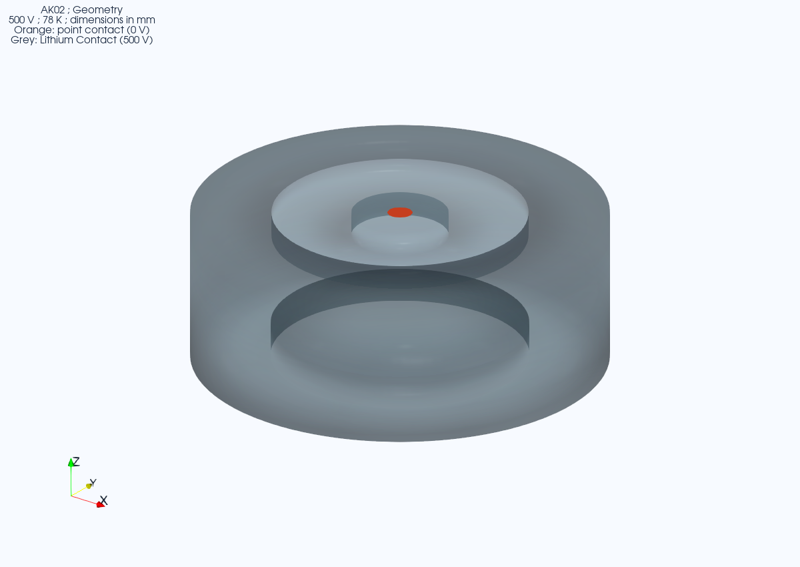

Geometry
Rotate the saved physical meshes and inspect contact IDs.
Stable model ID: AK02
Inverted coaxial point-contact (ICPC) · 2 contacts
Run in LBNL cryostat.
Recorded model status: geometry and material match

Control supports AK02 in the nominal LBNL modular cryostat. Assembly and compatibility. Use the Control instructions after setup.
Saved fields & signals · 22 September 2026 synthetic examples: field plots, movies and event signals.